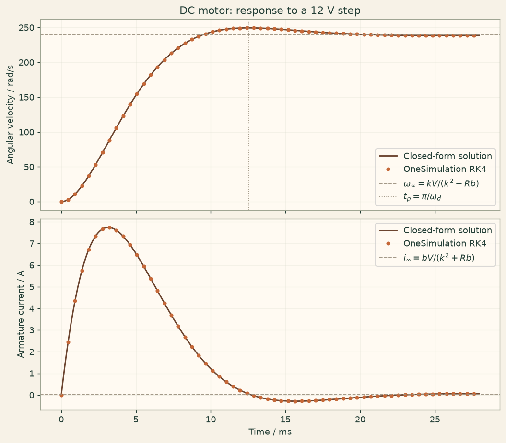

Docs › Examples › DC motor step response
Electromechanics · 0D
DC motor step response
A DC motor started with a voltage step, graded against the exact linear second-order response.

What it computes
OneSimulation integrates the coupled armature-circuit and rotor equations of a DC motor in time.
What it checks
Current, speed and shaft angle match the exact step response built from the characteristic roots to about 1e-9; peak time and overshoot agree.
The notebook
The complete notebook, cell by cell. Run it to produce the figures and the comparison printout.
A permanent-magnet DC motor is switched at \(t=0\) from rest onto a constant armature voltage \(V\). The armature has the resistance \(R\) and the inductance \(L\), the rotor the inertia \(J\) and the viscous friction \(b\); the same motor constant \(k\) links the back-EMF to the speed and the torque to the current. With the current \(i\) and the angular velocity \(\omega\) as states,
OneSimulation provides this pair as a zero-dimensional electric machine model (it also integrates the shaft angle \(\theta\)) and advances it with the classical fourth-order Runge-Kutta method.
Reference. The system is linear, \(\dot{\mathbf x}=\mathbf A\mathbf x+\mathbf B\) with \(\mathbf x=(i,\omega)\), so the step response from rest is
The poles \(s_{1,2}\) are the roots of \(s^2+\left(\frac{R}{L}+\frac{b}{J}\right)s+\frac{k^2+R\,b}{L\,J}=0\), and for distinct roots the matrix exponential has the closed form \(e^{\mathbf A t}=\dfrac{e^{s_1 t}(\mathbf A-s_2\mathbf I)-e^{s_2 t}(\mathbf A-s_1\mathbf I)}{s_1-s_2}\). The speed transfer function has no zero, so for complex poles the speed shows the textbook peak time \(t_p=\pi/\omega_d\) and overshoot \(e^{-\zeta\pi/\sqrt{1-\zeta^2}}\).
from importlib.metadata import version
import numpy as np
import matplotlib.pyplot as plt
import matplotlib
from cycler import cycler
from matplotlib.colors import LinearSegmentedColormap
# OneSimulation figure style: cream paper, dark-green ink, green-sand-copper field colours
CREAM, INK, GREEN, COPPER = "#F7F2E7", "#223D35", "#336B57", "#B66E43"
FIELD_CMAP = LinearSegmentedColormap.from_list(
"onesimulation", ["#214D43", "#5F9175", "#A8BC91", "#E4D6A0", "#CD9561", "#A85539"])
DIVERGING_CMAP = LinearSegmentedColormap.from_list(
"onesimulation_diverging", ["#104F54", "#5E9996", "#F7F2E7", "#D2996E", "#A4472D"])
for _cmap in (FIELD_CMAP, DIVERGING_CMAP):
if _cmap.name not in matplotlib.colormaps:
matplotlib.colormaps.register(_cmap)
plt.rcParams.update({
"figure.facecolor": CREAM, "savefig.facecolor": CREAM, "axes.facecolor": "#FFFAF2",
"text.color": INK, "axes.labelcolor": INK, "axes.titlecolor": INK, "axes.edgecolor": "#9FA593",
"xtick.color": INK, "ytick.color": INK, "grid.color": "#D5D7C8", "image.cmap": "onesimulation",
"axes.prop_cycle": cycler(color=[GREEN, COPPER, "#5F9175", "#A85539", "#214D43", "#CD9561", "#8B9A8D"]),
})
from onesim.cad.geometry import LumpedDomain
from onesim.meshing import LumpedMesh
from onesim.numerics import Numerics
from onesim.numerics.discretization import LumpedParameters
from onesim.numerics.time import ClassicalRungeKutta4
from onesim.physics.electromagnetics import DCMotor
from onesim.results.storage import MemoryOutputSink, Output
from onesim.simulation import Problem, Simulation
from onesim.simulation.initial_conditions import InitialValue
print("OneSimulation:", version("onesimulation"))Parameters and model
The parameters can be changed; the matrix-exponential reference stays valid for any positive values with distinct poles, while the overshoot check assumes complex poles. The values describe a small brushed motor with a light rotor, which makes the speed response slightly underdamped.
resistance = 1.0 # Ohm, armature resistance R
inductance = 2.0e-3 # H, armature inductance L
motor_constant = 0.05 # N*m/A (= V*s/rad), motor constant k
inertia = 1.0e-5 # kg*m^2, rotor inertia J
viscous_friction = 1.0e-5 # N*m*s/rad, viscous friction b
applied_voltage = 12.0 # V, voltage step V
denominator = motor_constant**2 + resistance * viscous_friction
steady_speed = motor_constant * applied_voltage / denominator
steady_current = viscous_friction * applied_voltage / denominator
a1 = resistance / inductance + viscous_friction / inertia
a0 = denominator / (inductance * inertia)
poles = np.roots([1.0, a1, a0])
decay_rate = -float(np.max(poles.real)) # slowest decay of the transient
end_time = 7.0 / decay_rate
time_step = 2.0e-5
print(f"steady speed = {steady_speed:.2f} rad/s ({steady_speed * 30 / np.pi:.0f} rpm), "
f"steady current = {steady_current * 1e3:.2f} mA")
print(f"poles: {poles[0]:.1f}, {poles[1]:.1f} 1/s")
domain = LumpedDomain()
motor = DCMotor(
domain=domain.system,
resistance=resistance,
inductance=inductance,
motor_constant=motor_constant,
inertia=inertia,
viscous_friction=viscous_friction,
applied_voltage=applied_voltage,
load_torque=0.0,
)
simulation = Simulation(
problem=Problem(
name="DC motor voltage step",
geometry=domain,
physics=(motor,),
initial_conditions=(
InitialValue(motor.current, 0.0),
InitialValue(motor.angular_velocity, 0.0),
InitialValue(motor.angle, 0.0),
),
),
mesh=LumpedMesh(domain),
numerics=Numerics(
spatial=LumpedParameters(),
time_integrator=ClassicalRungeKutta4(),
),
)
simulation.validate().require_valid()
sink = MemoryOutputSink()
back_emf = motor.field("back_emf")
result = simulation.run(
start_time=0.0,
end_time=end_time,
time_step=time_step,
output=Output(
fields=(motor.current, motor.angular_velocity, motor.angle, back_emf),
interval=time_step,
sink=sink,
),
)
times = np.asarray([float(s.time) for s in sink.snapshots])
def series(field):
return np.asarray([
float(np.asarray(s.fields[field.field_id].values).reshape(-1)[0])
for s in sink.snapshots
])
currents = series(motor.current)
speeds = series(motor.angular_velocity)
angles = series(motor.angle)Comparison with the closed-form solution
The matrix exponential is evaluated from the two poles with the formula above (complex arithmetic handles the oscillatory case; the result is real). The shaft angle is the time integral of the speed, which the same algebra gives in closed form. A passing check shows that this numerical example agrees with the linear motor equations; it is not a measurement of a real motor.
state_matrix = np.array([
[-resistance / inductance, -motor_constant / inductance],
[motor_constant / inertia, -viscous_friction / inertia],
])
steady_state = np.array([steady_current, steady_speed])
identity = np.eye(2)
s1, s2 = poles.astype(complex)
def matrix_exponential(t):
"""e^{A t} for every time in t, shape (len(t), 2, 2), via the two poles."""
e1 = np.exp(s1 * t)[:, None, None]
e2 = np.exp(s2 * t)[:, None, None]
return ((e1 * (state_matrix - s2 * identity) - e2 * (state_matrix - s1 * identity)) / (s1 - s2)).real
propagators = matrix_exponential(times)
reference_states = steady_state - np.einsum("tij,j->ti", propagators, steady_state)
reference_current, reference_speed = reference_states[:, 0], reference_states[:, 1]
# angle(t) = integral of omega: x_ss t - A^{-1} (e^{At} - I) x_ss, second component
inverse_a = np.linalg.inv(state_matrix)
integral_states = steady_state * times[:, None] - np.einsum(
"ij,tjk,k->ti", inverse_a, propagators - identity, steady_state
)
reference_angle = integral_states[:, 1]
peak_reference_current = float(np.max(np.abs(reference_current)))
max_current_error = float(np.max(np.abs(currents - reference_current)))
max_speed_error = float(np.max(np.abs(speeds - reference_speed)))
max_angle_error = float(np.max(np.abs(angles - reference_angle)))
print(f"Maximum current error: {max_current_error:.3e} A (peak current {peak_reference_current:.2f} A)")
print(f"Maximum speed error: {max_speed_error:.3e} rad/s (steady speed {steady_speed:.2f} rad/s)")
print(f"Maximum angle error: {max_angle_error:.3e} rad (final angle {reference_angle[-1]:.2f} rad)")
natural_frequency = np.sqrt(a0)
damping_ratio = a1 / (2.0 * natural_frequency)
damped_frequency = natural_frequency * np.sqrt(1.0 - damping_ratio**2)
peak_time = np.pi / damped_frequency
overshoot = np.exp(-damping_ratio * np.pi / np.sqrt(1.0 - damping_ratio**2))
index_peak = int(np.argmax(speeds))
measured_overshoot = speeds[index_peak] / steady_speed - 1.0
print(f"zeta = {damping_ratio:.3f}, peak time: measured {times[index_peak] * 1e3:.3f} ms, "
f"exact {peak_time * 1e3:.3f} ms")
print(f"speed overshoot: measured {100 * measured_overshoot:.3f} %, exact {100 * overshoot:.3f} %")Figure
fig, axes = plt.subplots(2, 1, figsize=(8, 7), sharex=True, constrained_layout=True)
fig.patch.set_facecolor("#fbf5eb")
for ax in axes:
ax.set_facecolor("#fffaf2")
ax.grid(alpha=0.25)
dense_t = np.linspace(0.0, end_time, 1500)
dense_states = steady_state - np.einsum("tij,j->ti", matrix_exponential(dense_t), steady_state)
stride = max(1, len(times) // 60)
axes[0].plot(dense_t * 1e3, dense_states[:, 1], color="#6b442f", lw=1.6, label="Closed-form solution")
axes[0].plot(times[::stride] * 1e3, speeds[::stride], "o", color="#c56838", ms=3.5, label="OneSimulation RK4")
axes[0].axhline(steady_speed, color="#9a8f7d", ls="--", lw=1.0, label=r"$\omega_\infty=kV/(k^2+Rb)$")
axes[0].axvline(peak_time * 1e3, color="#9a8f7d", ls=":", lw=1.0, label=r"$t_p=\pi/\omega_d$")
axes[0].set(ylabel="Angular velocity / rad/s", title="DC motor: response to a 12 V step")
axes[0].legend(loc="lower right")
axes[1].plot(dense_t * 1e3, dense_states[:, 0], color="#6b442f", lw=1.6, label="Closed-form solution")
axes[1].plot(times[::stride] * 1e3, currents[::stride], "o", color="#c56838", ms=3.5, label="OneSimulation RK4")
axes[1].axhline(steady_current, color="#9a8f7d", ls="--", lw=1.0, label=r"$i_\infty=bV/(k^2+Rb)$")
axes[1].set(xlabel="Time / ms", ylabel="Armature current / A")
axes[1].legend(loc="upper right")
plt.show()Going further
Increase the inertia or reduce the inductance and the poles become real: the speed then rises without overshoot and the response approaches the familiar first-order form with the electromechanical time constant \(RJ/k^2\). The matrix-exponential reference still applies, only the peak-time check must be dropped. A constant load_torque \(T_\mathrm{L}\) shifts the steady state to \(\omega_\infty=(kV-RT_\mathrm{L})/(k^2+Rb)\); halving the time step should shrink the time-series errors by about a factor of sixteen.